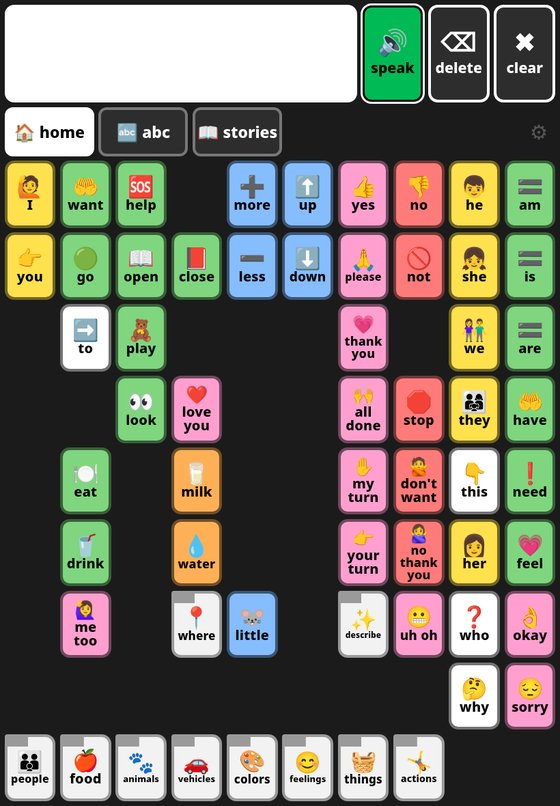
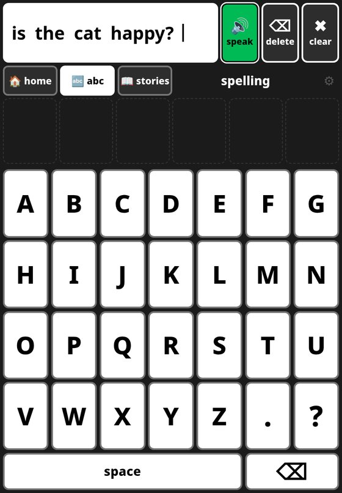
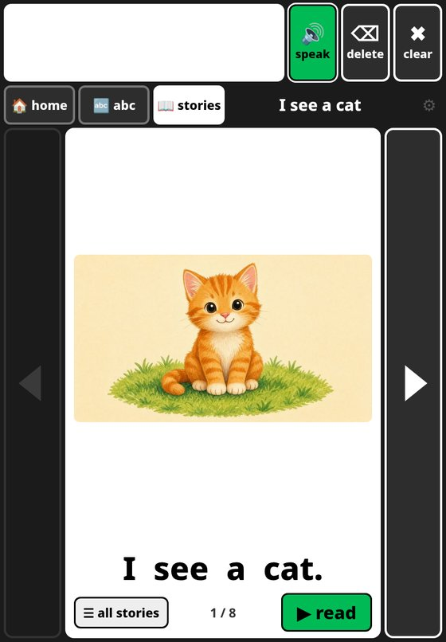
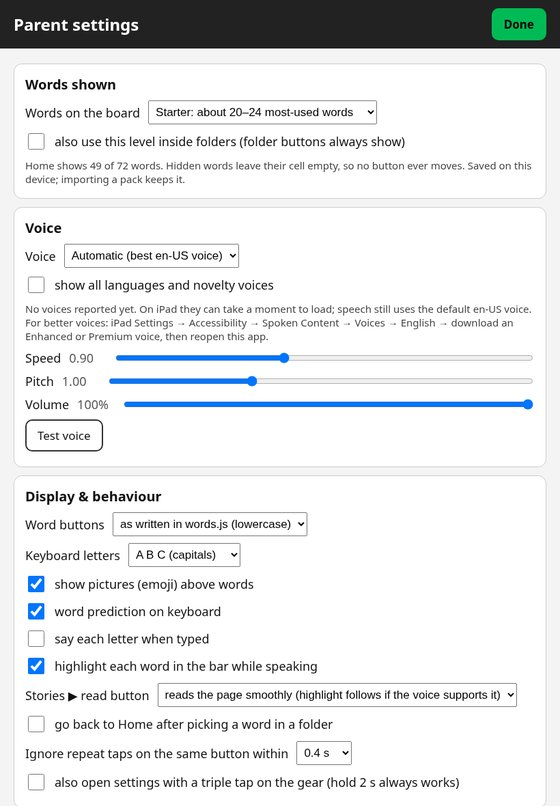
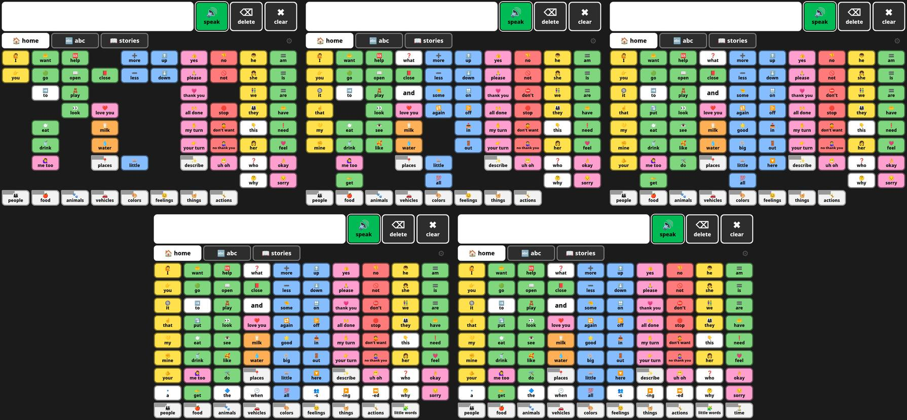
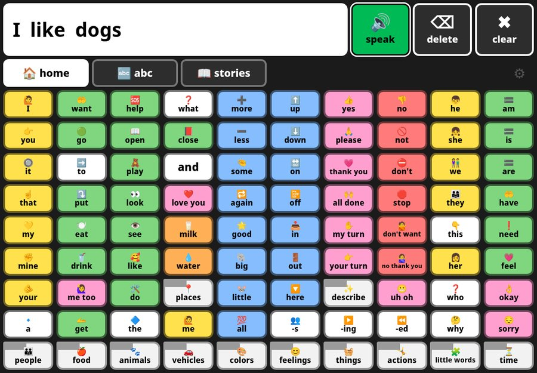

ANOVA Language
App · AAC word board
A free word board for people who communicate by tapping words instead of speaking. It's a web app for iPad and other tablets, and it works offline once it's installed.
Who it's for
- Families of nonspeaking or minimally speaking kids who want a board at home, including while they wait on an insurance-funded device.
- Early readers and spellers who are ahead of their speech: there's a full keyboard with word prediction.
- Speech therapists, teachers, and tinkerers who want an open, editable board with no account or subscription.

How it works
- Tap a word to hear it and add it to the message bar. Tap "speak" to say the whole message.
- Buttons never move. Words are shown in levels (Starter, Middle, Expanded, Sentences, Full, or Custom), and a hidden word leaves an empty cell, so motor memory carries over as the board grows.
- Colors follow word type (a modified Fitzgerald key).
- Spelling keyboard (A to Z) with word prediction and a backspace key. Tapping . or ? reads the typed sentence aloud.
- Read-along stories with pictures. Turning a page never speaks; tapping a word or "read" does.
- All words and stories are built into the app, so there's nothing to import. A pack is optional, only for adding photos, recordings, or extras, and it stays on the device. Nothing is uploaded.



How the board grows
The board grows with the child without ever moving a button. It has about 422 words in five levels.
- Five word levels. On the home board, Starter shows the 49 most-used words, Middle shows 67, and Expanded shows 75 (329 words across the whole board). Sentences adds when and word endings for 78 home words, plus the rest of the "little words" folder. Full adds Conversation, about 422 words in all: a "time" folder, thinking and school words, and social phrases.
- Word endings: tap -s, -ing, -ed, or 's after a word to change it, so jump becomes jumping, cry becomes cries, go becomes went, and child becomes children. Delete takes the ending off first.
- Updates never surprise the child. A saved level carries over, and a board that was on Full before 1.4.0 stays at Expanded, so Sentences and Conversation words appear only when a parent picks those levels.
- Levels can apply inside folders too (it's off by default). At Starter, for example, the animals folder shows 42 of its 89 animals. Sentences and Conversation words always follow the level.
- Single words can be turned on or off in parent settings, so you can add one new word at a time ahead of the next level.
- Buttons never move. A hidden word leaves an empty cell, and new words only fill empty cells, so motor memory carries over.
- Opposites sit together: more and less, up and down, open and close, big and little, hot and cold, yesterday and tomorrow, before and after.
- New words are added to the app's word list and arrive with the next update. An optional pack can add words for one child on one device. An opt-in usage log, kept on the device, shows which words get used, so you know when to show more.


Why it's free
Dedicated speech devices often cost several thousand dollars, and commercial iPad AAC apps cost a few hundred. This one runs on a tablet you may already have. It's a home option, not a replacement for an evaluation by a speech-language pathologist, and it's not a medical device.
How it's built
Plain HTML, CSS, and JavaScript. No build step, frameworks, ads, analytics, or network calls. Installs as a home-screen web app and works offline. MIT license.
Status
Version 1.4.1, started September 2026 and actively developed. Recent work: the Expanded level filled in with everyday words for short sentences (a, the, and me on home; a "little words" folder with I'm, it's, that's, and let's; body parts, clothes, daily things like bath, bed, and potty; foods including juice; and reaction words like wow, yuck, and oops), two new word levels (Sentences and Conversation), word endings (-s, -ing, -ed, 's) with irregular forms, "little words" and "time" folders, the "where" folder renamed to "places", a more natural voice picked automatically, and a 9x10 home board with core words and opposites side by side.
About the name
ANOVA is a nod to analysis of variance, the statistics term. Language learning varies a lot from person to person, and the board is built to adapt to that. The app itself doesn't do any statistics.